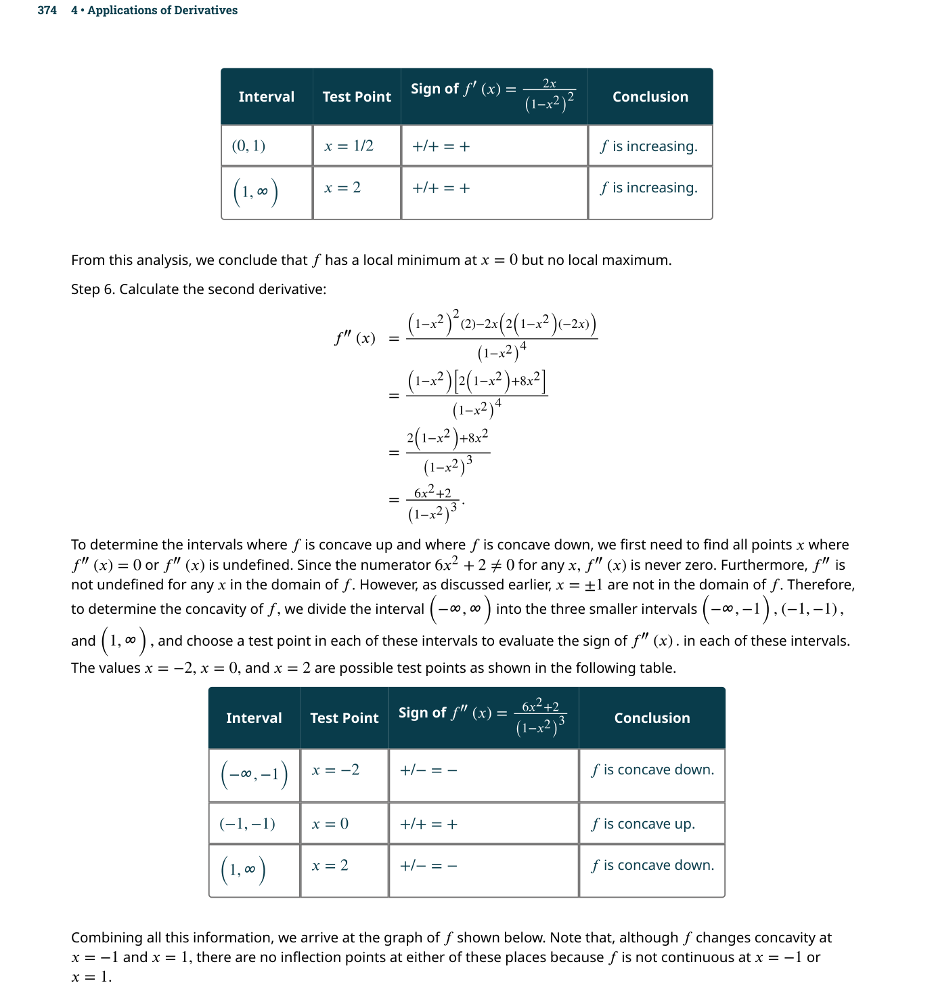
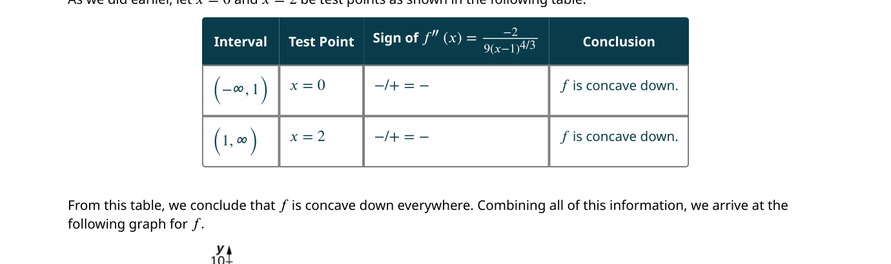
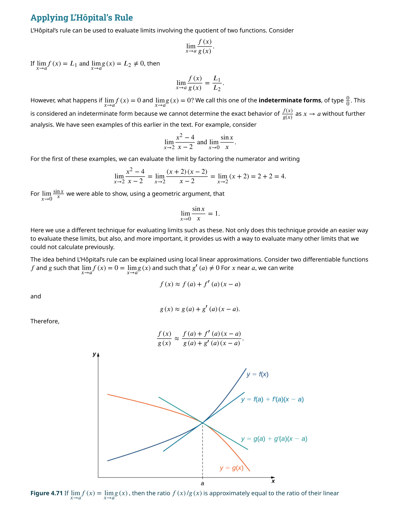
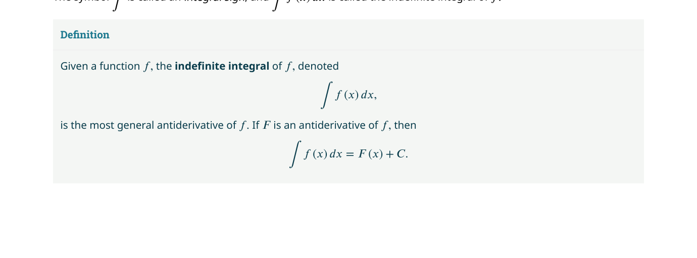
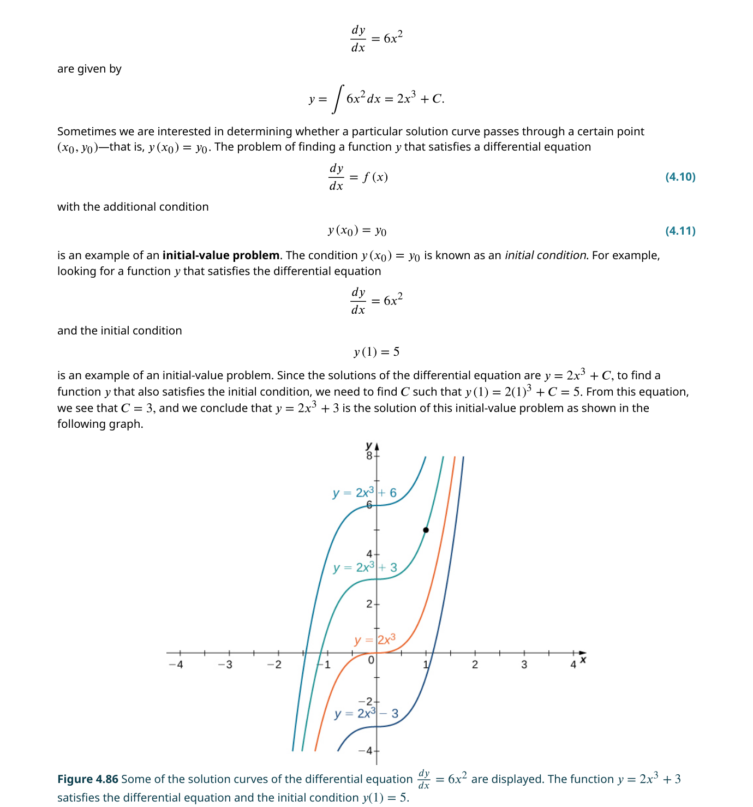
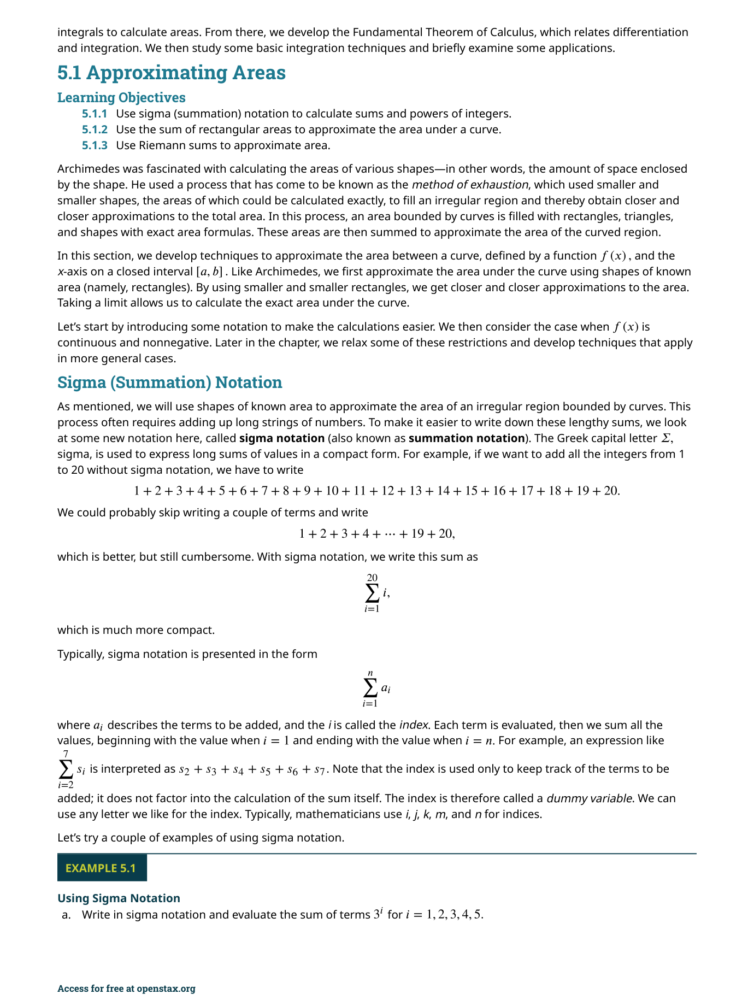
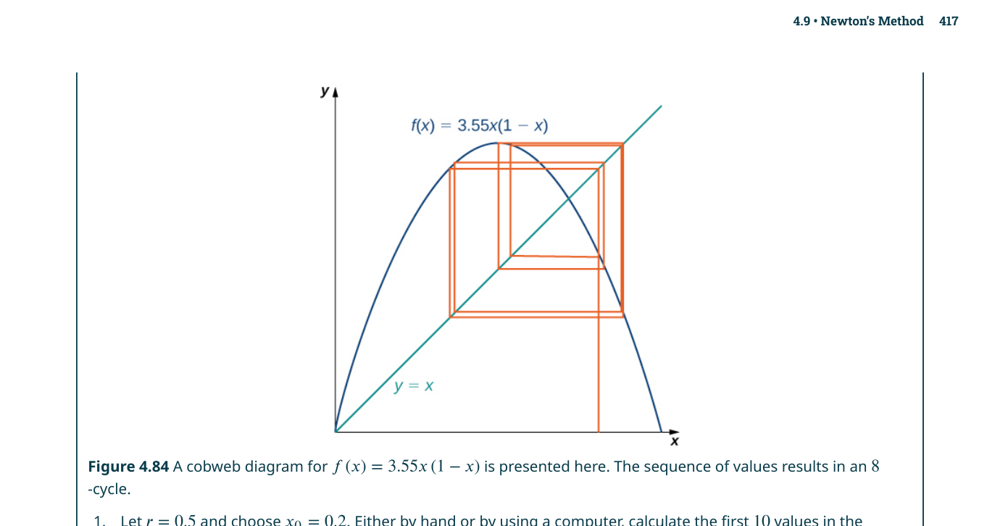

序列與級數
📌 本章要解決的核心問題
如何對「無限多項相加」給出嚴格的數學意義？Koch 雪花（如封面所示）由無限多個三角形構成——我們能否計算它的面積？答案是：可以——透過無窮級數（infinite series）這個強大工具。無窮級數不僅能回答這類幾何問題，更是將函數表示為「無限多項式」（冪級數）的基礎，在微分方程、電子電路、軌道力學中無處不在。
🔑 關鍵概念（10 條）
- 序列（sequence）：定義在正整數上的函數——$a_1, a_2, a_3, \ldots$
- 序列極限：$\lim_{n\to\infty} a_n = L$ 表示當 $n$ 足夠大時，$a_n$ 任意接近 $L$
- 單調收斂定理：有界且單調的序列必收斂
- 無窮級數：$\sum_{n=1}^{\infty} a_n$ 定義為部分和序列 $\{S_N\}$ 的極限
- 幾何級數：$\sum ar^{n-1}$ 當 $|r|<1$ 時收斂至 $\frac{a}{1-r}$
- 發散檢驗：若 $\lim a_n \neq 0$，則級數必發散；但 $\lim a_n = 0$ 不保證收斂
- 積分檢驗：將級數與瑕積分比較，適用於正項遞減級數
- p-級數：$\sum \frac{1}{n^p}$ 當 $p>1$ 收斂，$p \le 1$ 發散
- 交錯級數檢驗：若 $b_n$ 遞減至 $0$，則 $\sum (-1)^{n-1}b_n$ 收斂
- 比值與根式檢驗：透過比較相鄰項的比值或 $n$ 次根來判斷收斂性
🔗 邏輯鏈
序列極限 → 部分和 → 級數定義 → 幾何級數（基準）→ 發散檢驗 → 積分檢驗 → p-級數（基準）→ 比較檢驗（與已知級數比大小）→ 極限比較檢驗（比漸近行為）→ 交錯級數檢驗（變號）→ 比值檢驗（階乘/指數）→ 根式檢驗（冪次）→ 絕對收斂 ⇒ 收斂
🧰 先備知識
極限的 $\varepsilon$-$N$ 定義、L'Hôpital 法則、瑕積分、部分分式分解、單調數列性質。強烈建議先複習 Ch2（極限）與 Ch3（積分技巧）。
5.1 序列（Sequences）
無窮序列（infinite sequence）
理解序列的關鍵在於：序列本質上是定義域為正整數的函數。因此，我們可以在坐標平面上繪製序列的圖形——每個點 $(n, a_n)$ 對應一個項。這也意味著我們可以討論序列的極限：當 $n \to \infty$ 時，$a_n$ 會趨近於什麼值？
等差序列（arithmetic sequence）：相鄰兩項的差為常數 $d$。通項公式：$a_n = a_1 + (n-1)d$。
等比序列（geometric sequence）：相鄰兩項的比值為常數 $r$。通項公式：$a_n = a_1 r^{n-1}$。
這兩種序列是整個級數理論的基石——等比級數是我們第一個能精確求和的無窮級數。
序列的極限
序列極限的正式定義：若對任意 $\varepsilon > 0$，存在整數 $N$ 使得 $n \ge N$ 時 $|a_n - L| < \varepsilon$，則稱序列 $\{a_n\}$ 收斂（converges）至 $L$，記為 $\lim_{n\to\infty} a_n = L$。不收斂的序列稱為發散（divergent）。
序列發散的方式有很多種：可以趨近 $+\infty$ 或 $-\infty$，也可以在兩個值之間來回振盪（例如 $a_n = (-1)^n$），甚至可以混沌地變化。不要看到「發散」就只想到 $\infty$！
由於序列是函數的特例，我們可以使用函數極限的性質來計算序列極限。定理 5.1（由函數定義的序列極限）：若存在函數 $f(x)$ 使得 $a_n = f(n)$ 且 $\lim_{x\to\infty} f(x) = L$，則 $\lim_{n\to\infty} a_n = L$。這讓我們可以使用 L'Hôpital 法則等工具來處理 $\infty/\infty$ 或 $0 \cdot \infty$ 型的序列極限。
設 $\lim a_n = A$，$\lim b_n = B$，$c$ 為常數：
📝 範例
📝 範例 5.3：求極限判斷 $\displaystyle a_n = \frac{3n^2 + 2n}{n^2 - 1}$ 是否收斂。
解：分子分母同除以 $n^2$：$\displaystyle \lim_{n\to\infty} \frac{3 + 2/n}{1 - 1/n^2} = \frac{3+0}{1-0} = 3$。序列收斂於 $3$。
對於 $\displaystyle a_n = n^{1/n}$，令 $y = n^{1/n}$，取對數後用 L'Hôpital：$\ln y = \frac{\ln n}{n} \to 0$，故 $\lim a_n = e^0 = 1$。
夾擠定理與連續函數
夾擠定理（Squeeze Theorem, Theorem 5.4）：若存在 $N$ 使得 $n \ge N$ 時 $a_n \le b_n \le c_n$，且 $\lim a_n = \lim c_n = L$，則 $\lim b_n = L$。典型的應用：$\lim \frac{\cos n}{n} = 0$，因為 $-\frac{1}{n} \le \frac{\cos n}{n} \le \frac{1}{n}$ 且兩端都趨近 $0$。
連續函數定理（Theorem 5.3）：若 $\lim a_n = L$ 且 $f$ 在 $L$ 處連續，則 $\lim f(a_n) = f(L)$。例如：因為 $\lim \frac{1}{n} = 0$ 且 $e^x$ 在 $0$ 處連續，所以 $\lim e^{1/n} = e^0 = 1$。
有界序列與單調收斂定理
序列 $\{a_n\}$ 稱為有上界（bounded above）若存在 $M$ 使 $a_n \le M$ 對所有 $n$ 成立；有下界（bounded below）若存在 $m$ 使 $a_n \ge m$；有界（bounded）表示既有上界也有下界。
核心定理——收斂序列必有界（Theorem 5.5）：收斂是有界的必要條件。但反過來不成立：$a_n = (-1)^n$ 有界（在 $-1$ 和 $1$ 之間）但發散。
若 $\{a_n\}$ 有界且在某一點之後為單調（遞增或遞減），則序列收斂。
這是本章最重要的定理之一——它給出了收斂的充分條件，且不需要知道極限值，這在分析遞迴定義的序列時特別有用。
📝 範例
📝 範例 5.6：單調收斂定理的應用考慮 $\displaystyle a_{n+1} = \frac{1}{2}\left(a_n + \frac{2}{a_n}\right)$，$a_1 = 2$。證明收斂並求極限。
解：可證明 $a_n \ge \sqrt{2}$（有下界）且 $a_{n+1} \le a_n$（遞減），由單調收斂定理知收斂。設 $\lim a_n = L$，代入遞迴式：$L = \frac{1}{2}(L + \frac{2}{L})$，解得 $L^2 = 2$，故 $L = \sqrt{2}$。這其實就是牛頓法求 $\sqrt{2}$！
序列 $\{a_n\}$ 是一串數字；級數 $\sum a_n$ 是把這些數字加起來。序列收斂談的是 $\lim a_n$，級數收斂談的是 $\lim S_N$（部分和）。兩者完全不同的概念！
等比序列的收斂性
等比序列 $r^n$ 的極限行為總結如下：


5.2 無窮級數（Infinite Series）
序列是有序的數字列表
定義：級數 $\sum_{n=1}^{\infty} a_n$ 的第 $N$ 部分和為 $S_N = \sum_{n=1}^{N} a_n$。若部分和序列 $\{S_N\}$ 收斂至一個實數 $S$，則稱級數收斂，$S$ 為級數的和（sum）。若 $\{S_N\}$ 發散，則級數發散。
這是級數理論的基石。所有收斂檢驗法的本質都是在判斷部分和序列是否收斂。了解這一點，你就不會被五花八門的檢驗法搞糊塗——它們只是判斷 $\{S_N\}$ 收斂性的不同方法。
📝 範例
📝 範例 5.7：使用部分和判定收斂$\displaystyle \sum_{n=1}^{\infty} \frac{1}{n(n+1)}$ 是否收斂？
解：利用部分分式：$\frac{1}{n(n+1)} = \frac{1}{n} - \frac{1}{n+1}$。部分和 $S_N = (1 - \frac{1}{2}) + (\frac{1}{2} - \frac{1}{3}) + \cdots + (\frac{1}{N} - \frac{1}{N+1}) = 1 - \frac{1}{N+1}$。$\lim S_N = 1$，故級數收斂且和為 $1$。
幾何級數（Geometric Series）
幾何級數是形如 $\sum_{n=1}^{\infty} ar^{n-1} = a + ar + ar^2 + \cdots$ 的級數，其中 $a$ 為首項（initial term），$r$ 為公比（ratio）。這是我們第一個能精確求和的無窮級數類型，也是最常用的基準級數之一。
📝 範例
📝 範例 5.10：循環小數化分數將 $5.2\overline{7}$ 化為分數。
解：$5.2\overline{7} = 5.2 + 0.07 + 0.007 + \cdots$。後面的級數是幾何級數：首項 $0.07$，公比 $0.1$，和 $= \frac{0.07}{1-0.1} = \frac{7}{90}$。所以 $5.2\overline{7} = 5.2 + \frac{7}{90} = \frac{52}{10} + \frac{7}{90} = \frac{468+7}{90} = \frac{475}{90} = \frac{95}{18}$。
調和級數（Harmonic Series）
$\sum_{n=1}^{\infty} \frac{1}{n} = 1 + \frac{1}{2} + \frac{1}{3} + \cdots$ 稱為調和級數。儘管 $\lim \frac{1}{n} = 0$，這個級數發散！這是因為項趨近於零的「速度不夠快」。
調和級數是所有微積分課本中最經典的反例。$\lim \frac{1}{n} = 0$，但部分和 $S_N \approx \ln N + \gamma$（Euler 常數 $\gamma \approx 0.5772$），這表示 $S_N$ 緩慢但確實地趨近無限大。發散檢驗只能證明發散，不能證明收斂！
🔬 調和級數發散的證明
Telescoping 級數
Telescoping 級數（望遠鏡級數）是指部分和中的大部分項互相抵消，只留下前幾項和後幾項的級數。一般形式：$\sum_{n=1}^{\infty} (b_n - b_{n+1})$。第 $N$ 部分和 $S_N = b_1 - b_{N+1}$。級數收斂若且唯若 $\lim b_{N+1}$ 存在且有限。
📝 範例
📝 範例 5.12：Telescoping 級數$\displaystyle \sum_{n=1}^{\infty} \ln\left(\frac{n}{n+1}\right)$ 是否收斂？
解：$S_N = (\ln 1 - \ln 2) + (\ln 2 - \ln 3) + \cdots + (\ln N - \ln(N+1)) = \ln 1 - \ln(N+1) = -\ln(N+1)$。$\lim S_N = -\infty$，級數發散。
收斂級數的代數性質
（Theorem 5.7）若 $\sum a_n = S$ 且 $\sum b_n = T$，則 $\sum (a_n \pm b_n) = S \pm T$，且對任意常數 $c$，$\sum c a_n = cS$。這些性質直接繼承自序列極限的代數法則。


5.3 發散檢驗與積分檢驗（Divergence and Integral Tests）
在前兩節中，我們通過直接計算部分和來判斷級數的收斂性
發散檢驗（Divergence Test）
若級數 $\sum_{n=1}^{\infty} a_n$ 收斂，則必有 $\lim_{n\to\infty} a_n = 0$。換言之，其逆否命題即為發散檢驗：
許多初學者看到 $\lim a_n = 0$ 就斷定級數收斂——這完全錯誤！發散檢驗只能用來證明發散，不能用來證明收斂。若 $\lim a_n = 0$，發散檢驗「無結論」（inconclusive），必須使用其他檢驗法。
📝 範例
📝 範例 5.13：發散檢驗對 $\displaystyle \sum_{n=1}^{\infty} \frac{n}{n+1}$：$\lim \frac{n}{n+1} = 1 \neq 0$，故級數發散。
對 $\displaystyle \sum_{n=1}^{\infty} \frac{1}{n}$：$\lim \frac{1}{n} = 0$，發散檢驗無結論（實際上發散）。
對 $\displaystyle \sum_{n=1}^{\infty} \cos(\pi n) = \sum (-1)^n$：$\lim (-1)^n$ 不存在，故級數發散。
積分檢驗（Integral Test）
積分檢驗將無窮級數與瑕積分聯繫起來。核心思路：若 $a_n = f(n)$ 且 $f(x)$ 是連續、正、遞減的函數，則 $\sum a_n$ 與 $\int_1^{\infty} f(x)\,dx$ 同時收斂或同時發散。
📝 範例
📝 範例 5.14：積分檢驗$\displaystyle \sum_{n=1}^{\infty} \frac{1}{n^2+1}$：令 $f(x)=\frac{1}{x^2+1}$。$\int_1^{\infty} \frac{1}{x^2+1}dx = [\arctan x]_1^{\infty} = \frac{\pi}{2} - \frac{\pi}{4} = \frac{\pi}{4}$（收斂），故級數收斂。
$\displaystyle \sum_{n=1}^{\infty} \frac{\ln n}{n}$：$f(x)=\frac{\ln x}{x}$，$\int_1^{\infty} \frac{\ln x}{x}dx = [\frac{1}{2}(\ln x)^2]_1^{\infty} = \infty$（發散），故級數發散。
p-級數（p-Series）
形如 $\sum_{n=1}^{\infty} \frac{1}{n^p}$ 的級數稱為 p-級數。這是僅次於幾何級數的第二大基準級數。
p-級數的收斂條件直接由積分檢驗導出：$\int_1^{\infty} \frac{1}{x^p}dx$ 當 $p>1$ 收斂，當 $p\le 1$ 發散。這是最標準的積分檢驗應用案例。
餘項估計（Remainder Estimate）
若級數收斂，我們可以用部分和 $S_N$ 來近似級數的和 $S$。問題是：誤差 $R_N = S - S_N$ 有多大？
📝 範例
📝 範例 5.16：餘項估計用 $S_{10}$ 近似 $\displaystyle \sum_{n=1}^{\infty} \frac{1}{n^5}$，估計誤差。
解：$R_{10} \le \int_{10}^{\infty} \frac{1}{x^5}dx = [-\frac{1}{4x^4}]_{10}^{\infty} = \frac{1}{40000} = 0.000025$，所以誤差小於 $2.5 \times 10^{-5}$。

5.4 比較檢驗（Comparison Tests）
積分檢驗要求我們能找到一個容易積分的函數
直接比較檢驗（Comparison Test）
核心想法非常直觀：如果一個正項級數的每一項都不超過另一個收斂級數的對應項，那麼它也收斂。反之，如果它的每一項都大於一個發散級數的對應項，那麼它也發散。
若要證明收斂，你需要找到一個更大的收斂級數（你的級數比它小）。若要證明發散，你需要找到一個更小的發散級數（你的級數比它大）。很多學生搞反方向——記住：小於收斂者收斂，大於發散者發散。
📝 範例
📝 範例 5.17：比較檢驗$\displaystyle \sum_{n=1}^{\infty} \frac{1}{n^2+1}$：因為 $\frac{1}{n^2+1} < \frac{1}{n^2}$ 且 $\sum \frac{1}{n^2}$ 收斂（p-級數 $p=2>1$），所以原級數收斂。
$\displaystyle \sum_{n=1}^{\infty} \frac{1}{n-1/2}$：因為 $\frac{1}{n-1/2} > \frac{1}{n}$ 且 $\sum \frac{1}{n}$ 發散，所以原級數發散。
極限比較檢驗（Limit Comparison Test）
有時直接比較檢驗的不等式方向不對。例如對 $\sum \frac{1}{n^2-1}$，我們想與 $\sum \frac{1}{n^2}$ 比較，但 $\frac{1}{n^2-1} > \frac{1}{n^2}$（方向錯了！）。極限比較檢驗解決了這個問題——它比較的是漸近行為而非逐項大小。
若 $L = 0$ 且 $\sum b_n$ 收斂：$\sum a_n$ 收斂。
若 $L = \infty$ 且 $\sum b_n$ 發散：$\sum a_n$ 發散。
📝 範例
📝 範例 5.18：極限比較檢驗$\displaystyle \sum_{n=1}^{\infty} \frac{1}{n^2-1}$：與 $\sum \frac{1}{n^2}$ 比較。$\lim \frac{1/(n^2-1)}{1/n^2} = \lim \frac{n^2}{n^2-1} = 1$。因為 $\sum \frac{1}{n^2}$ 收斂，所以原級數收斂。
$\displaystyle \sum_{n=2}^{\infty} \frac{1}{\ln n}$：與 $\sum \frac{1}{n}$ 比較。$\lim \frac{1/\ln n}{1/n} = \lim \frac{n}{\ln n} = \infty$。因為 $\sum \frac{1}{n}$ 發散，所以原級數發散。
對有理函數型（多項式之比），保留分子和分母的最高次項。例如 $\sum \frac{n+1}{n^3+2n}$ → 比較 $\sum \frac{n}{n^3} = \sum \frac{1}{n^2}$（收斂）。對指數/階乘型，使用比值檢驗通常更合適。

5.5 交錯級數（Alternating Series）
目前討論的檢驗法大多要求級數的項為非負
交錯調和級數
$\sum_{n=1}^{\infty} \frac{(-1)^{n-1}}{n} = 1 - \frac{1}{2} + \frac{1}{3} - \frac{1}{4} + \cdots$ 稱為交錯調和級數（alternating harmonic series）。與其「正項版本」（調和級數發散）不同，這個級數收斂——其和為 $\ln 2$。
關鍵在於正負抵消（cancellation）。在一個交錯級數中，連續兩項互相部分抵消，使得部分和的振盪幅度越來越小。若 $b_n$ 遞減至 $0$，奇數部分和 $S_{2k-1}$ 遞減且有下界，偶數部分和 $S_{2k}$ 遞增且有上界，兩者趨近於同一極限。
交錯級數檢驗（Alternating Series Test）
(ii) $\displaystyle \lim_{n\to\infty} b_n = 0$
若 $b_n$ 不遞減（例如 $b_n$ 在某些區間振盪），即使 $\lim b_n = 0$，級數仍可能發散。同樣地，若 $\lim b_n \neq 0$，交錯級數檢驗不適用——此時發散檢驗直接告訴你級數發散。
📝 範例
📝 範例 5.19：交錯級數檢驗$\displaystyle \sum_{n=1}^{\infty} \frac{(-1)^{n-1}}{\sqrt{n}}$：$b_n = 1/\sqrt{n}$ 遞減且 $\lim b_n = 0$，故級數收斂。
$\displaystyle \sum_{n=1}^{\infty} (-1)^{n-1} \frac{n}{n+1}$：$\lim b_n = \lim \frac{n}{n+1} = 1 \neq 0$，交錯級數檢驗不適用，發散檢驗告訴我們級數發散。
交錯級數的餘項估計
對交錯級數，餘項估計特別簡潔：
絕對收斂與條件收斂
這是一個關鍵的區分：
- 絕對收斂（absolute convergence）：$\sum |a_n|$ 收斂。此時 $\sum a_n$ 必定收斂。
- 條件收斂（conditional convergence）：$\sum a_n$ 收斂但 $\sum |a_n|$ 發散。
定理 5.15：若 $\sum |a_n|$ 收斂，則 $\sum a_n$ 收斂。但交錯調和級數就是一個條件收斂的反例：$\sum \frac{(-1)^{n-1}}{n}$ 收斂，但 $\sum \frac{1}{n}$（調和級數）發散。
📝 範例
📝 範例 5.21：判斷絕對/條件收斂$\displaystyle \sum_{n=1}^{\infty} \frac{(-1)^{n-1}}{n^2}$：$\sum \frac{1}{n^2}$ 收斂（p-級數 $p=2$），故原級數絕對收斂。
$\displaystyle \sum_{n=1}^{\infty} \frac{(-1)^{n-1}}{\sqrt[3]{n}}$：$\sum \frac{1}{n^{1/3}}$ 發散（$p=1/3 \le 1$），但原級數滿足交錯級數檢驗條件，故條件收斂。
條件收斂的級數可以透過重新排列項的順序來改變其和——甚至可以使其發散或收斂至任意實數。這在有限加法中完全不可能發生。絕對收斂的級數不受重排影響——這是絕對收斂最重要的性質之一。

5.6 比值檢驗與根式檢驗（Ratio and Root Tests）
本章最後兩個收斂檢驗
比值檢驗（Ratio Test）
比值檢驗透過分析相鄰項的比值 $\left|\frac{a_{n+1}}{a_n}\right|$ 來判斷收斂速度：若比值趨近於小於 $1$ 的數，表示項衰減得比幾何級數還快，級數絕對收斂。
$\rho > 1$（或 $\rho = \infty$）：發散
$\rho = 1$：無結論
📝 範例
📝 範例 5.23：比值檢驗$\displaystyle \sum_{n=1}^{\infty} \frac{n!}{n^n}$：$\left|\frac{a_{n+1}}{a_n}\right| = \frac{(n+1)!}{(n+1)^{n+1}} \cdot \frac{n^n}{n!} = \frac{n^n}{(n+1)^n} = \frac{1}{(1+1/n)^n} \to \frac{1}{e} < 1$。絕對收斂。
$\displaystyle \sum_{n=1}^{\infty} \frac{2^n}{n!}$：$\left|\frac{a_{n+1}}{a_n}\right| = \frac{2^{n+1}}{(n+1)!} \cdot \frac{n!}{2^n} = \frac{2}{n+1} \to 0 < 1$。絕對收斂。（實際上和為 $e^2 - 1$。）
對於任何 p-級數 $\sum 1/n^p$，$\lim |a_{n+1}/a_n| = 1$，但 p-級數有時收斂有時發散。這說明當 $\rho = 1$ 時，級數的「精細結構」才是關鍵——比值檢驗不夠靈敏。
根式檢驗（Root Test）
根式檢驗分析 $\sqrt[n]{|a_n|}$ 的極限。當 $a_n$ 本身是某個表達式的 $n$ 次冪時，根式檢驗特別方便。
$\rho > 1$（或 $\rho = \infty$）：發散
$\rho = 1$：無結論
📝 範例
📝 範例 5.24：根式檢驗$\displaystyle \sum_{n=1}^{\infty} \left(\frac{2n+1}{3n+2}\right)^n$：$\sqrt[n]{|a_n|} = \frac{2n+1}{3n+2} \to \frac{2}{3} < 1$。絕對收斂。
$\displaystyle \sum_{n=1}^{\infty} \frac{n^n}{2^{n^2}}$：$\sqrt[n]{|a_n|} = \frac{n}{2^n} \to 0 < 1$。絕對收斂。
若項包含階乘（$n!$）→ 用比值檢驗（階乘在比值中簡化）。
若項包含$n$ 次冪（$(\cdots)^n$）→ 用根式檢驗（$n$ 次根消去冪次）。
若兩者都不明顯且比值檢驗在計算上可行，通常先嘗試比值檢驗。$\rho=1$ 時兩者都無結論。
收斂檢驗的策略選擇
面對一個級數時，按以下順序思考：
- 是否為熟悉的級數？幾何級數？p-級數？調和級數？→ 直接判斷。
- 是否為交錯級數？→ 用交錯級數檢驗。若要判斷絕對收斂，檢查 $\sum |a_n|$。
- 是否類似幾何級數或 p-級數？→ 用比較檢驗或極限比較檢驗。
- 項是否包含階乘或冪次？→ 用比值檢驗（階乘）或根式檢驗（冪次）。
- 以上都失敗？→ 用發散檢驗。若 $\lim a_n \neq 0$，發散。若 $\lim a_n = 0$，嘗試積分檢驗。
📝 範例
📝 範例 5.25：策略演練$\displaystyle \sum_{n=1}^{\infty} \frac{n^3}{3^n}$：包含冪次，比值檢驗：$\rho = \frac{1}{3} < 1$，絕對收斂。
$\displaystyle \sum_{n=1}^{\infty} \frac{(-1)^n}{\ln n}$：交錯級數，$b_n = 1/\ln n$ 遞減至 $0$，收斂（條件收斂）。
$\displaystyle \sum_{n=1}^{\infty} \left(1 + \frac{1}{n}\right)^{n^2}$：根式檢驗：$\sqrt[n]{a_n} = (1+1/n)^n \to e > 1$，發散。

🎮 互動模型：Taylor 多項式逼近
增加次數 n，觀察 Taylor 多項式如何逼近原函數。
📋 關鍵概念回顧（Key Concepts）
- 序列（Sequence）：定義在正整數上的函數 $\{a_n\}$。收斂指 $\lim_{n\to\infty} a_n$ 存在且有限，否則發散。
- 單調有界定理（Monotonic Bounded Theorem）：每個有界且單調的序列必定收斂。這是判斷序列收斂的重要工具——不需知道極限值即可確認收斂。
- 無窮級數（Infinite Series）：$\sum a_n$ 定義為部分和序列 $\{S_n\}$ 的極限。若 $\lim S_n$ 存在則級數收斂。
- 幾何級數（Geometric Series）：$\sum ar^{n-1}$ 在 $|r| < 1$ 時收斂至 $\frac{a}{1-r}$，是判斷其他級數的基準。
- 發散檢驗（Divergence Test）：若 $\lim a_n \neq 0$，則 $\sum a_n$ 發散。但 $\lim a_n = 0$ 不保證收斂（例如調和級數）。
- 積分檢驗（Integral Test）：對於正項遞減函數 $f(n)=a_n$，$\sum a_n$ 與 $\int_1^\infty f(x)dx$ 同斂散。同時給出餘項估計 $R_n \le \int_n^\infty f(x)dx$。
- 比較檢驗（Comparison / Limit Comparison Test）：將未知級數與已知斂散性的級數比較。若 $a_n \le b_n$ 且 $\sum b_n$ 收斂則 $\sum a_n$ 收斂；或 $\lim \frac{a_n}{b_n} = c > 0$ 則兩者同斂散。
- 交錯級數檢驗（Alternating Series Test）：若 $b_n > 0$ 遞減且 $\lim b_n = 0$，則 $\sum (-1)^{n-1}b_n$ 收斂。餘項滿足 $|R_n| \le b_{n+1}$。
- 絕對收斂與條件收斂：$\sum |a_n|$ 收斂 ⇒ $\sum a_n$ 收斂（絕對收斂）。$\sum a_n$ 收斂但 $\sum |a_n|$ 發散 = 條件收斂。
- 比值檢驗（Ratio Test）：$\lim \left|\frac{a_{n+1}}{a_n} ight| = L$。$L<1$ 絕對收斂；$L>1$（或 $\infty$）發散；$L=1$ 無法判定。
- 根式檢驗（Root Test）：$\lim \sqrt[n]{|a_n|} = L$。判別準則與比值檢驗相同，對含 $n$ 次冪的級數特別有效。
- 策略：先測 $\lim a_n \neq 0$（發散檢驗）；若項含階乘或冪次用比值檢驗；若項含 $n$ 次冪用根式檢驗；正項遞減函數用積分檢驗；與已知級數比較用比較檢驗。
📐 關鍵公式（Key Equations）
| 公式 | 說明 |
|---|---|
| $$\sum_{n=1}^\infty ar^{n-1} = \frac{a}{1-r},\quad |r|<1$$ | 幾何級數和 |
| $$\sum_{n=1}^\infty \frac{1}{n^p}\quad \begin{cases} \text{收斂}, & p>1 \\ \text{發散}, & p \le 1 \end{cases}$$ | $p$-級數判別法 |
| $$\lim_{n\to\infty} a_n \neq 0 \;\Longrightarrow\; \sum a_n \text{ 發散}$$ | 發散檢驗（必要非充分條件） |
| $$R_n = S - S_n \le \int_n^\infty f(x)\,dx$$ | 積分檢驗餘項估計 |
| $$\lim_{n\to\infty} \frac{a_n}{b_n} = c > 0 \;\Longrightarrow\; \sum a_n \text{ 與 } \sum b_n \text{ 同斂散}$$ | 極限比較檢驗 |
| $$\sum_{n=1}^\infty (-1)^{n-1}b_n,\; b_n>0,\; b_n\searrow,\; b_n\to 0 \;\Longrightarrow\; \text{收斂}$$ | 交錯級數檢驗 |
| $$|R_n| \le b_{n+1}$$ | 交錯級數餘項界限 |
| $$\lim_{n\to\infty} \left|\frac{a_{n+1}}{a_n} ight| = L \quad \begin{cases} L<1: \text{絕對收斂} \\ L>1: \text{發散} \\ L=1: \text{無法判定} \end{cases}$$ | 比值檢驗 |
| $$\lim_{n\to\infty} \sqrt[n]{|a_n|} = L \quad \text{（判別同比值檢驗）}$$ | 根式檢驗 |
| $$\sum_{n=1}^\infty \frac{1}{n} \text{ 發散（調和級數）}$$ | 經典反例：$a_n\to 0$ 但級數發散 |
| $$\sum_{n=1}^\infty \frac{(-1)^{n-1}}{n} = \ln 2$$ | 交錯調和級數（條件收斂） |
| $$\lim_{n\to\infty} \left(1 + \frac{1}{n} ight)^n = e$$ | $e$ 的序列定義 |
本章摘要
本章建立了微積分中最強大的工具之一：無窮級數。從序列的基本定義出發，我們逐步建立了判斷級數收斂性的完整體系。
🔑 本章關鍵概念總整理
5.1 序列
- 序列是定義在正整數上的函數；收斂指 $\lim a_n$ 存在且有限
- 有界 + 單調 ⇒ 收斂（單調收斂定理）
- 等比序列 $r^n$ 在 $|r|<1$ 時收斂至 $0$，$r=1$ 時收斂至 $1$，否則發散
5.2 無窮級數
- 級數收斂 ⇔ 部分和序列 $\{S_N\}$ 收斂
- 幾何級數 $\sum ar^{n-1}$：$|r|<1$ 時收斂至 $\frac{a}{1-r}$
- 調和級數 $\sum \frac{1}{n}$ 發散（經典反例！）
- Telescoping 級數：大部分項消去，部分和簡化為有限項
5.3 發散與積分檢驗
- 發散檢驗：$\lim a_n \neq 0$ ⇒ 級數發散（反過來不成立）
- 積分檢驗：$\sum a_n$ 與 $\int_1^{\infty} f(x)dx$ 同收同散
- p-級數 $\sum 1/n^p$：$p>1$ 收斂，$p \le 1$ 發散
- 餘項 $R_N$ 由積分給出上下界
5.4 比較檢驗
- 直接比較：$a_n \le b_n$ 且 $\sum b_n$ 收斂 ⇒ $\sum a_n$ 收斂
- 極限比較：$\lim a_n/b_n = L$，$0<L<\infty$ 則同收同散
5.5 交錯級數
- 交錯級數檢驗：$b_n$ 遞減至 $0$ ⇒ $\sum (-1)^{n-1}b_n$ 收斂
- 餘項：$|R_N| \le b_{N+1}$
- 絕對收斂 ⇒ 收斂；條件收斂 ⇒ 重排可改變和
5.6 比值與根式檢驗
- 比值檢驗：$\rho = \lim |a_{n+1}/a_n|$；$\rho<1$ 收斂，$\rho>1$ 發散，$\rho=1$ 無結論
- 根式檢驗：$\rho = \lim \sqrt[n]{|a_n|}$；同樣準則
- 策略：先看是否為熟悉級數 → 交錯？→ 類似幾何/p？→ 有階乘/冪？→ 發散檢驗/積分檢驗
📊 收斂檢驗一覽表
| 檢驗名稱 | 適用級數 | 收斂條件 | 發散條件 | 注意事項 |
|---|---|---|---|---|
| 發散檢驗 | 任何 $\sum a_n$ | —（不能證明收斂） | $\lim a_n \neq 0$ | $\lim a_n = 0$ 時無結論 |
| 幾何級數 | $\sum ar^{n-1}$ | $|r| < 1$ | $|r| \ge 1$ | 和為 $\frac{a}{1-r}$ |
| p-級數 | $\sum \frac{1}{n^p}$ | $p > 1$ | $p \le 1$ | $p=1$ 為調和級數 |
| 積分檢驗 | 正項 $a_n=f(n)$ | $\int_1^{\infty} f(x)dx$ 收斂 | $\int_1^{\infty} f(x)dx$ 發散 | $f$ 連續正遞減 |
| 比較檢驗 | 正項 $a_n$ | $a_n \le b_n$ 且 $\sum b_n$ 收斂 | $a_n \ge b_n$ 且 $\sum b_n$ 發散 | 方向很關鍵！ |
| 極限比較檢驗 | 正項 $a_n, b_n$ | $\lim a_n/b_n = L$，$0| $\lim a_n/b_n = L$，$0 | $L=0$ 或 $\infty$ 時也有結論 |
|
| 交錯級數檢驗 | $\sum (-1)^{n-1}b_n$ | $b_n$ 遞減且 $\lim b_n = 0$ | —（條件不滿足時無法用此檢驗判定發散） | 餘項 $\le b_{N+1}$ |
| 比值檢驗 | 任何 $a_n \neq 0$ | $\rho = \lim |a_{n+1}/a_n| < 1$ | $\rho > 1$ 或 $\rho = \infty$ | $\rho=1$ 無結論；適合階乘 |
| 根式檢驗 | 任何 | $\rho = \lim \sqrt[n]{|a_n|} < 1$ | $\rho > 1$ 或 $\rho = \infty$ | $\rho=1$ 無結論；適合冪次 |
⚠️ 初學者常見錯誤
這恐怕是級數理論中最常見的誤解。發散檢驗只能證明發散，不能證明收斂。調和級數 $\sum 1/n$ 的項趨於 $0$ 卻發散。正確的邏輯是：若級數收斂，則 $\lim a_n = 0$（必要條件）；但 $\lim a_n = 0$ 不保證收斂。永遠記住調和級數這個反例。
要證明收斂：你需要找一個更大的收斂級數（你的小於它）。要證明發散：你需要找一個更小的發散級數（你的大於它）。口訣：「小於收斂者收斂，大於發散者發散」。如果方向不對，改用極限比較檢驗。
序列 $\{a_n\}$ 收斂談的是 $\lim a_n$ 是否存在。級數 $\sum a_n$ 收斂談的是 $\lim S_N$ 是否存在。這是兩個完全不同的問題。例如 $a_n = 1/n$：序列收斂至 $0$，但級數 $\sum 1/n$ 發散。
交錯級數檢驗要求兩個條件：(1) $b_n$ 遞減，(2) $\lim b_n = 0$。兩個條件缺一不可。若 $b_n$ 不遞減，即使 $\lim b_n = 0$，級數仍可能發散。例如構造一個交錯級數，讓 $b_n$ 在奇數項很大、偶數項很小但不遞減——級數會發散。
對於任何 p-級數，比值檢驗和根式檢驗都給出 $\rho=1$。但 p-級數有時收斂有時發散。當 $\rho=1$ 時，必須使用其他檢驗法（比較檢驗、積分檢驗等）。永遠不要說「因為 $\rho=1$ 所以級數收斂/發散」——你應該說「比值檢驗無結論」。
✅ 自我檢測（Self-Check）
完成以下題目檢驗你對本章核心概念的掌握程度。點擊展開查看答案。
題 1：幾何級數求和 — $\displaystyle\sum_{n=1}^{\infty} \left(\frac{2}{3} ight)^{n-1}$ 的和是多少？
答案：這是首項 $a = 1$、公比 $r = \frac{2}{3}$ 的幾何級數。$|r| = \frac{2}{3} < 1$，故收斂。
和 $S = \frac{a}{1-r} = \frac{1}{1 - 2/3} = \frac{1}{1/3} = 3$。
題 2：p-級數判別 — $\displaystyle\sum_{n=1}^{\infty} \frac{1}{n^3}$ 收斂還是發散？$\displaystyle\sum_{n=1}^{\infty} \frac{1}{\sqrt{n}}$ 呢？
答案：$p$-級數 $\sum \frac{1}{n^p}$ 當 $p>1$ 收斂，$p \leq 1$ 發散。
$\sum \frac{1}{n^3}$：$p = 3 > 1$ → 收斂。
$\sum \frac{1}{\sqrt{n}} = \sum \frac{1}{n^{1/2}}$：$p = 1/2 \leq 1$ → 發散。
題 3：發散檢驗 — $\displaystyle\sum_{n=1}^{\infty} \frac{n}{n+1}$ 收斂還是發散？
答案：$\lim_{n\to\infty} \frac{n}{n+1} = 1 \neq 0$。根據發散檢驗，$\lim a_n \neq 0$ 則級數必發散。因此此級數發散。
注意：若 $\lim a_n = 0$，發散檢驗無結論（如調和級數 $\sum \frac{1}{n}$ 就是 $\lim a_n = 0$ 但發散的例子）。
題 4：交錯級數檢驗 — $\displaystyle\sum_{n=1}^{\infty} \frac{(-1)^{n-1}}{n}$ 收斂嗎？是絕對收斂還是條件收斂？
答案：$b_n = 1/n$ 滿足：(1) $b_n$ 遞減，(2) $\lim b_n = 0$。由交錯級數檢驗知級數收斂。
絕對值級數 $\sum |a_n| = \sum \frac{1}{n}$ 為調和級數，發散。因此原級數為條件收斂。
題 5：極限比較檢驗 — $\displaystyle\sum_{n=2}^{\infty} \frac{1}{n^2 - 1}$ 收斂還是發散？
答案：與 $\sum \frac{1}{n^2}$ 比較。$\lim_{n\to\infty} \frac{1/(n^2-1)}{1/n^2} = \lim_{n\to\infty} \frac{n^2}{n^2-1} = 1$（$0 < 1 < \infty$）。
$\sum \frac{1}{n^2}$ 是 $p=2>1$ 的 $p$-級數，收斂。由極限比較檢驗，原級數也收斂。
📚 延伸資源
- Khan Academy — Sequences & Series：互動練習，涵蓋數列極限、幾何級數、各種收斂檢驗法
- 3Blue1Brown — Essence of Calculus：YouTube 系列，第 10 章以視覺化方式解釋泰勒級數的直覺，與本章的級數收斂性密切相關
- Paul's Online Notes — Series & Sequences：詳盡的範例與習題，涵蓋所有檢驗法的逐步解題流程
- 下一章預告：第 10 章 — 冪級數將把無窮級數提升到新層次——用級數來表示函數本身，引入泰勒級數、麥克勞林級數，以及收斂區間的概念